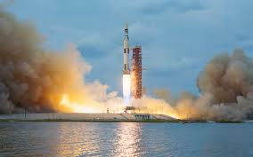
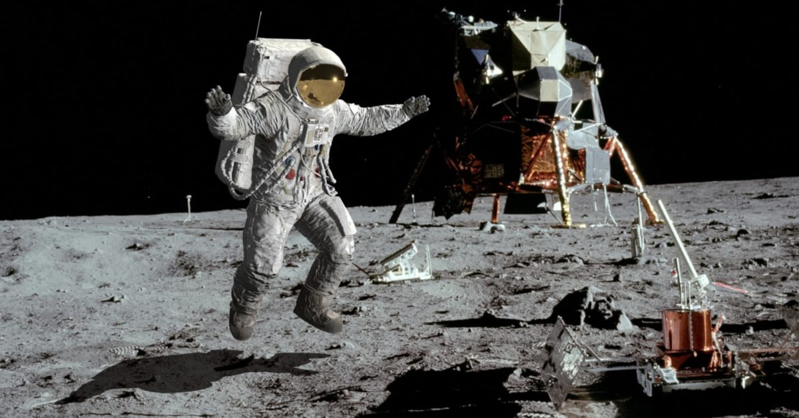

MISSIONE APOLLO 11
Nel luglio del 1969, l'umanità si preparava a compiere un passo epocale nella sua storia: l'atterraggio di esseri umani sulla superficie della Luna. Questa audace impresa fu resa possibile grazie alla missione Apollo 11, un evento che rimane inciso nella memoria collettiva come uno dei momenti più significativi dell'esplorazione spaziale.
Guidata dagli astronauti Neil Armstrong, Edwin "Buzz" Aldrin e Michael Collins, l'Apollo 11 fu la quinta missione abitata del programma spaziale Apollo della NASA e la prima a raggiungere il nostro satellite naturale. Il 16 luglio 1969, un'imponente Saturn V si levò dalla piattaforma di lancio del Kennedy Space Center in Florida, portando con sé il sogno di raggiungere le stelle.

IL RAZZO
Il Saturn V, il missile che ha portato l'uomo sulla luna per sei volte, è stata la macchina più potente mai costruita. Lungo 110,6 metri e largo oltre 10, con massa di 3.000 tonnellate, fu sviluppato sotto la direzione di Wernher von Braun, l’ingegnere del Terzo Reich nazista che progettò il razzo V-2 ma dopo la guerra fu “arruolato” dagli Stati Uniti.
Era composto da 3 stadi e aveva un compito incredibile: far uscire dall'attrazione gravitazionale terrestre la navicella Apollo e il modulo lunare Lem.
Dopo un viaggio di tre giorni nello spazio, l'Apollo 11 entrò in orbita lunare, preparandosi per il momento cruciale: l'atterraggio sulla superficie lunare. Il 20 luglio 1969, milioni di persone in tutto il mondo furono incollate ai loro schermi televisivi mentre Armstrong pronunciava le iconiche parole: "Un piccolo passo per un uomo, un balzo gigantesco per l'umanità", mentre scendeva dalla scala del modulo lunare, seguito da Aldrin
La missione Apollo 11 non solo dimostrò la straordinaria capacità tecnologica e l'ingegno dell'umanità, ma rappresentò anche un momento di unità globale e di speranza nel potenziale della razza umana. La sua eredità continua a ispirare generazioni di esploratori e innovatori, spingendo l'umanità sempre più lontano nelle profondità dello spazio.
